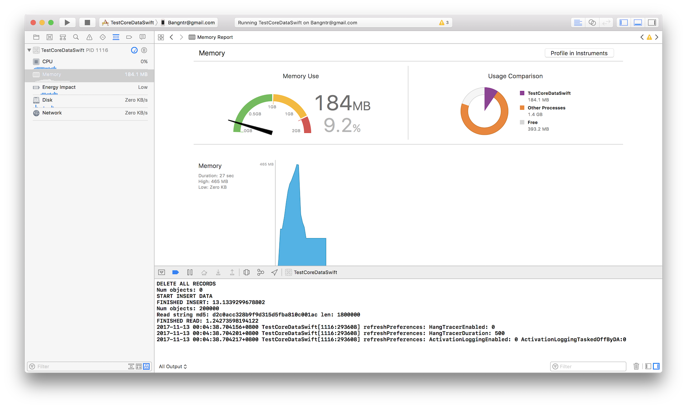
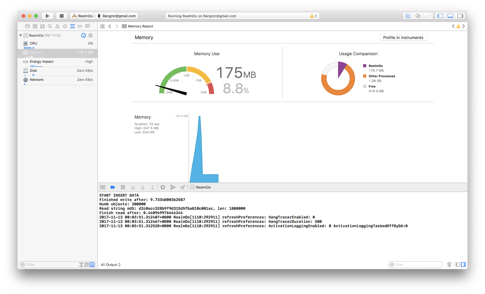

Coredata latest - Swift - Release 
Realm latest - Swift 4 - Release  Memory usage is quite similar (Some cases Realm use less memory.
Realm pitch memory usage may higher
Realm is abit faster in writing (not too much) and much fater in reading